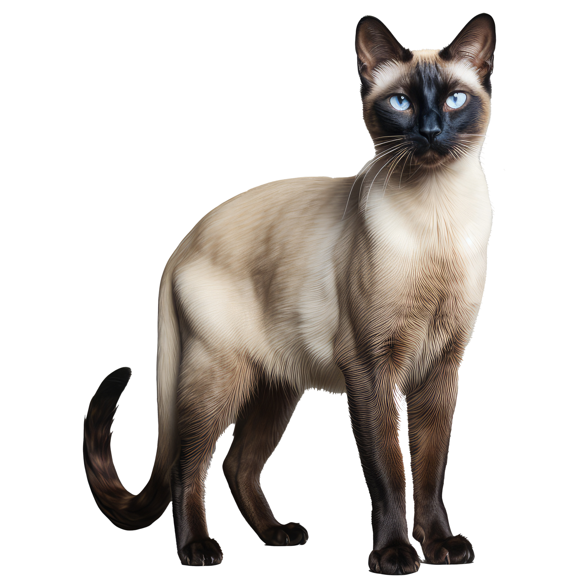
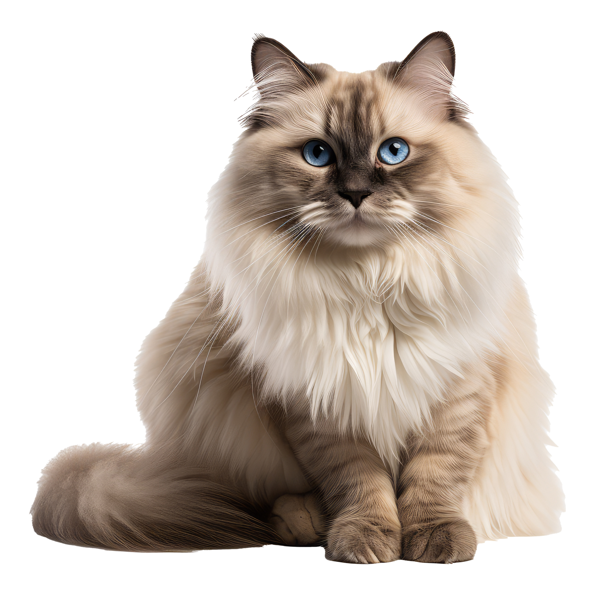
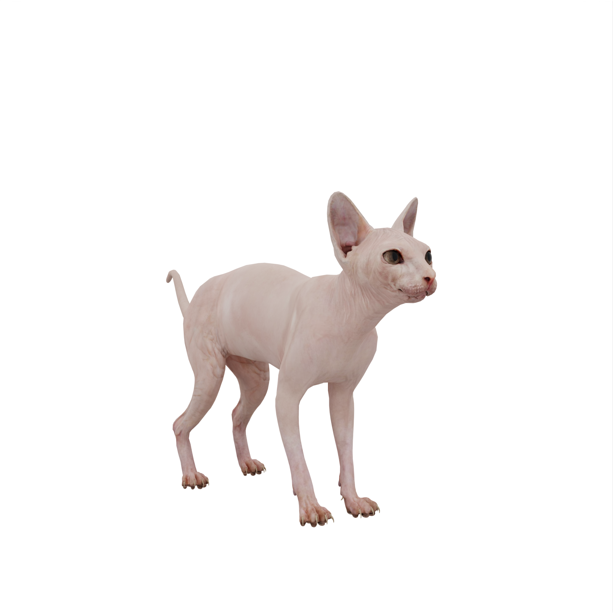
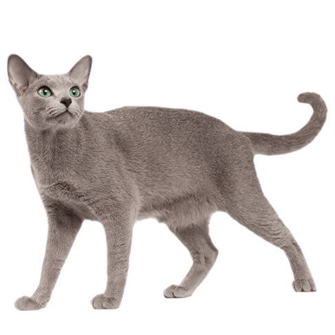
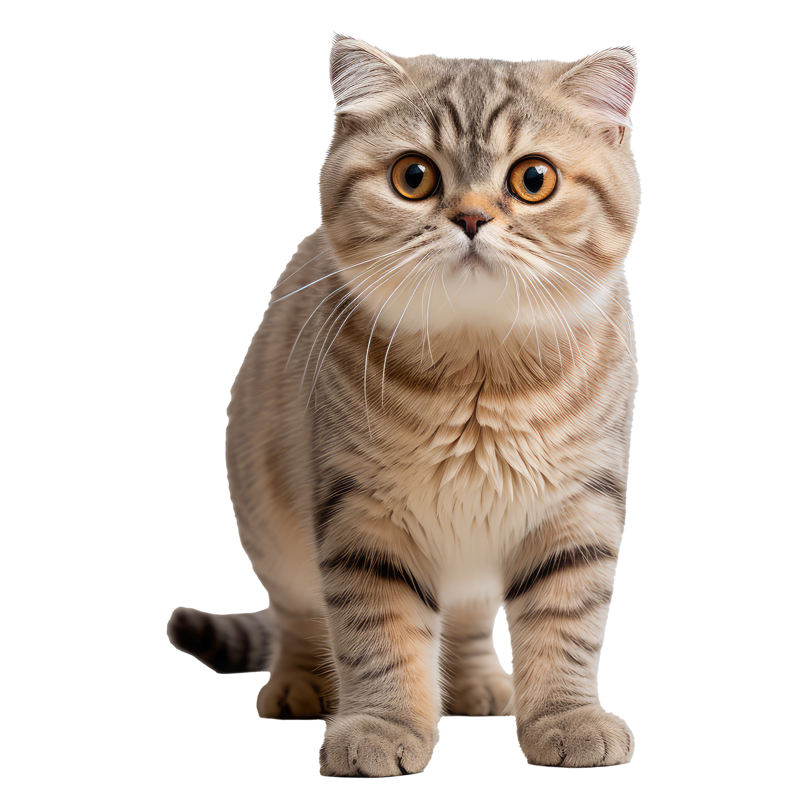
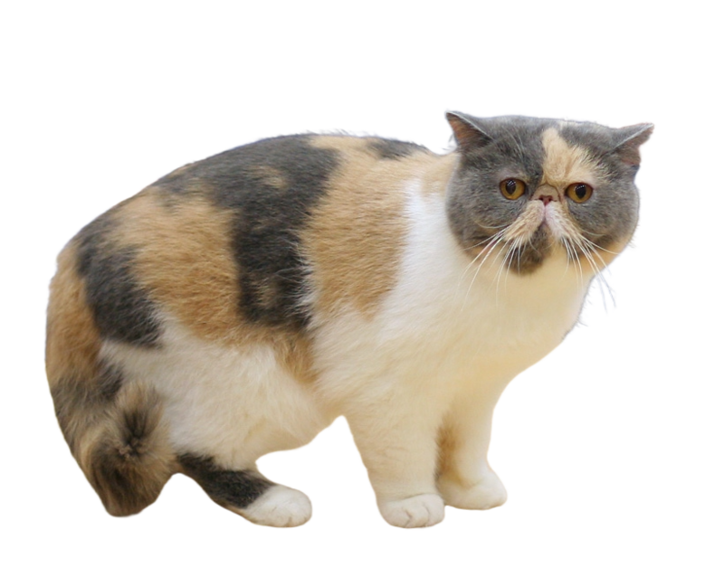
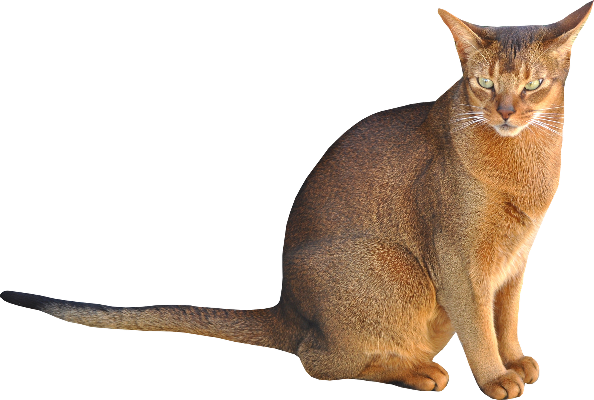
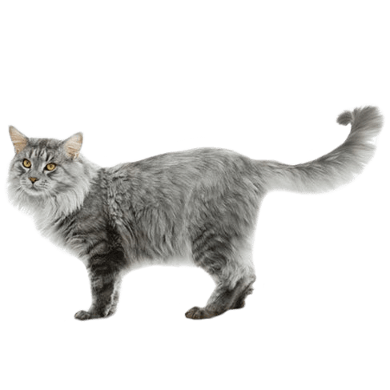
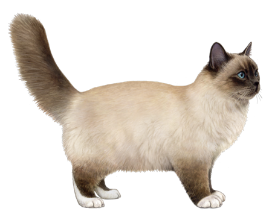

Persian Cat

Did you know? Persian cats are known for their long, flowing coats and sweet, gentle personalities.
The Persian cat, also known as the Persian Longhair, is one of the most popular and recognizable cat breeds in the world. It is characterized by its long, thick fur, short muzzle, and large round eyes. Persians are known for their calm and affectionate nature, making them great companions.
Siamese Cat
Did you know? Siamese cats are one of the oldest and most recognizable cat breeds.
The Siamese cat is a natural breed originating from Thailand, formerly known as Siam. It is known for its striking blue almond-shaped eyes, short coat with color points on the ears, face, paws, and tail, and long slender body. Siamese cats are known for their vocal and social nature.
Maine Coon Cat

Did you know? Maine Coon cats are one of the largest domesticated cat breeds.
The Maine Coon is one of the oldest natural breeds in North America and is native to the state of Maine. It is a large and muscular cat with a long, bushy tail, tufted ears, and a thick, water-repellent coat. Maine Coons are known for their friendly and sociable nature, making them great family pets.
Ragdoll Cat
Did you know? Ragdoll cats are known for their relaxed temperament and tendency to go limp when picked up.
The Ragdoll cat is a large, affectionate breed with striking blue eyes. It is characterized by its semi-long fur, color point markings, and distinctive blue eyes. Ragdolls are known for their gentle and docile nature, making them great companions.
Bengal Cat

Did you know? Bengal cats have a unique spotted or marbled coat pattern reminiscent of wild cats.
The Bengal cat is a domesticated breed with a wild appearance and a playful nature. It is characterized by its distinctive coat pattern and athletic build. Bengals are known for their intelligence and energy, making them great companions for active families.
Sphynx Cat
Did you know? Sphynx cats are known for their lack of fur and wrinkled skin.
The Sphynx cat is a hairless breed known for its distinctive appearance and affectionate nature. It is characterized by its wrinkled skin, large ears, and muscular body. Sphynx cats are known for their playful and social nature, making them great companions.
Russian Blue Cat
Did you know? Russian Blue cats are known for their short, dense blue-gray coat and emerald green eyes.
The Russian Blue cat is a breed known for its elegant appearance and gentle temperament. It is characterized by its plush blue-gray coat and striking green eyes. Russian Blues are known for their reserved nature and loyalty to their human companions.
British Shorthair Cat

Did you know? British Shorthair cats are known for their round faces, stocky bodies, and dense, plush coats.
The British Shorthair cat is a breed known for its sturdy build and easygoing temperament. It is characterized by its round face, large round eyes, and dense, plush coat. British Shorthairs are known for their independent nature and affectionate demeanor.
Scottish Fold Cat
Did you know? Scottish Fold cats are known for their unique folded ears.
The Scottish Fold cat is a breed known for its distinctive folded ears and sweet, expressive face. It is characterized by its round face, large round eyes, and compact body. Scottish Folds are known for their friendly and affectionate nature.
Burmese Cat

Did you know? Burmese cats are known for their expressive eyes and sleek, muscular bodies.
The Burmese cat is a breed known for its affectionate nature and distinctive coat color. It is characterized by its sleek, muscular body, expressive eyes, and short, fine coat. Burmese cats are known for their social and outgoing nature.
Exotic Shorthair Cat
Did you know? Exotic Shorthair cats are known for their distinctive short, plush coat and round faces.
The Exotic Shorthair cat is a breed known for its loving and affectionate nature. It is characterized by its short, plush coat, round face, and large, expressive eyes. Exotic Shorthairs are known for their calm and easygoing temperament, making them great companions.
Abyssinian Cat
Did you know? Abyssinian cats are one of the oldest known cat breeds.
The Abyssinian cat is a breed known for its sleek, muscular body and distinctive coat color. It is characterized by its large ears, expressive eyes, and short, fine coat with a ticked tabby pattern. Abyssinians are known for their active and playful nature.
Manx Cat
Did you know? Manx cats are known for their distinctive tailless or short-tailed appearance.
The Manx cat is a breed known for its compact, muscular body and lack of tail or short tail. It is characterized by its rounded head, large eyes, and round face. Manx cats are known for their playful and affectionate nature.
Birman Cat
Did you know? Birman cats are known for their striking blue eyes and luxurious, semi-long coat.
The Birman cat is a breed known for its gentle and affectionate nature. It is characterized by its striking blue eyes, medium-length fur, and color point markings. Birmans are known for their calm and loving temperament.